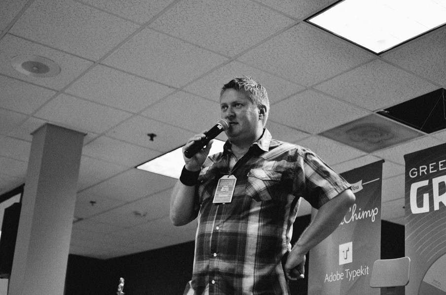
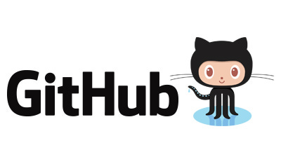
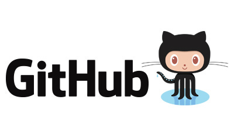

What is Grok?
GROK is an event unlike any other. It’s a gathering of creative people who want to connect with their peers and discuss the most pressing issues of our day.
Register ScheduleRegister for our Newsletter

What are 10/20s?
10/20s are mediated discussions between about a dozen participants. Any participant in a 10/20 can propose a topic for discussion. You can talk about software, your work environment, your personal challenges–anything that’s on your mind. After 10 minutes of conversation, the session leader can choose to close the topic and ask for another. If the conversation is particularly interesting, the se
Our Sponsors
 
